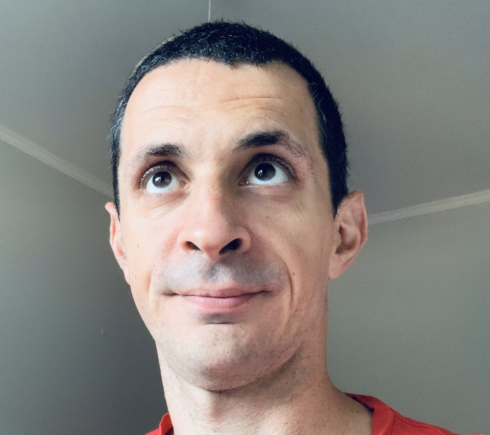

About

ML + λ
Founder of UnfoldML, a private research lab at the intersection of language understanding and formal program verification.
Machine learning engineer and architect in digital music contract analytics industrial manufacturing the medical field, where I build PoCs and systems combining machine vision, search and NLP.
I have a M. Sc in Telecommunication from DTU (Technical University of Denmark), where I did research on integrated photonics.
More about me:
- I have a partner who gave us two beautiful daughters (4 and 1 yo).
- Pre-kids I used to rock climb and boulder a lot. Nowadays I bike to work and do strength training either outdoors or at the gym.
- Love travelling and have been to 26 countries so far.
- I like cooking from regional cuisines, and one random evening I might prepare katsudon (or tortellini for a select few).
- Huge music fan: I’ve been making and listening to music ever since I have memory. Spent my 20s inside DAWs and nowadays I tinker with modular synths.
- Speak Italian and English (and have studied some French, Swedish, Chinese and Japanese at various points).